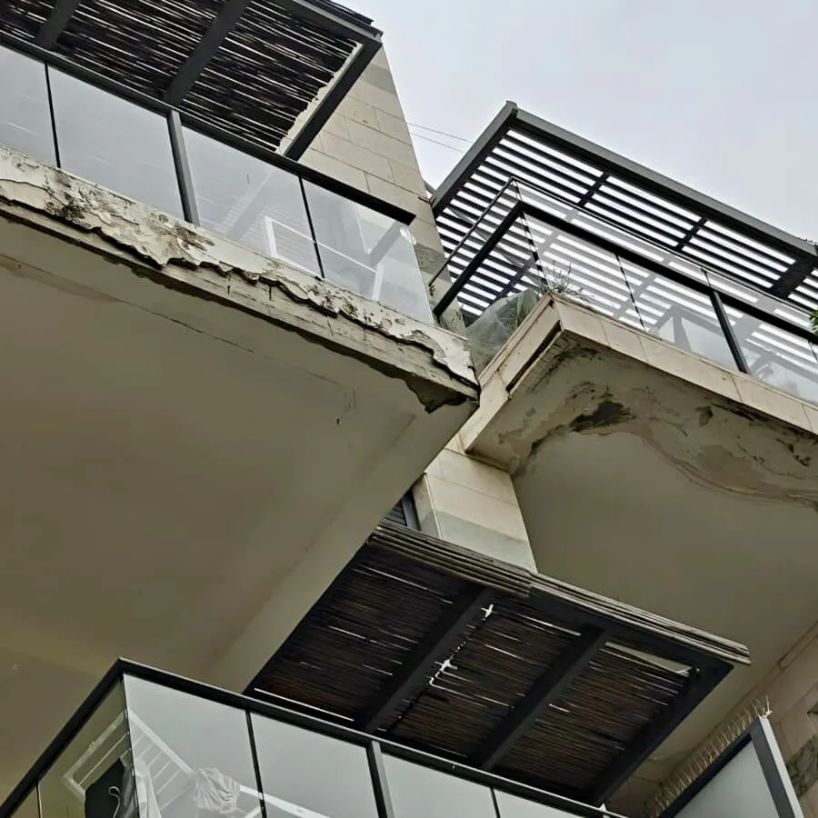
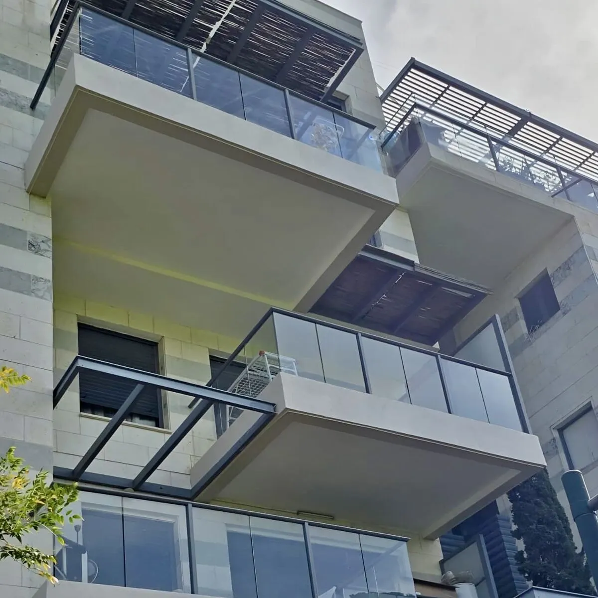
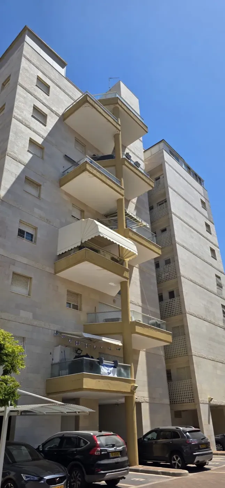
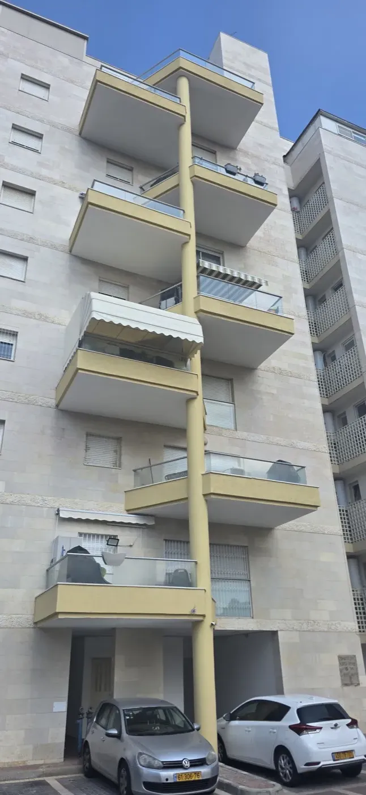

בניינים משותפים ובתים פרטיים
שיקום מרפסות בבניין משותף או בבית פרטי, בתיאום מול הנציגות ובמינימום הפרעה לדיירים.
חיזוק, איטום, ריצוף ומעקות למרפסות קיימות, בליווי מהנדס או אדריכל ובהתאם לתקנים.
מרפסות חשופות לשמש, לגשם ולשינויי טמפרטורה, ועם השנים מופיעים סדקים, רטיבות, ברזלים חשופים ומעקות רופפים. מעבר למראה, מרפסת פגועה עלולה להפוך למסוכנת.
אנחנו מלווים את התהליך מקצה לקצה, מבדיקת מצב המרפסת, דרך עבודות החיזוק, ועד לאיטום, ריצוף ומעקות.
שיקום מרפסות בבניין משותף או בבית פרטי, בתיאום מול הנציגות ובמינימום הפרעה לדיירים.
שיקום מרפסות ומעקות בבתי מלון, במבני אירוח ובמוסדות, לפי תקני הבטיחות.
קבלן אחד לכל שלבי העבודה, מהחיזוק ועד הגימור.
בדיקת מצב המרפסת והגדרת העבודות הנדרשות, בליווי מהנדס או אדריכל.
טיפול בסדקים, בברזלים חשופים ובבטון פגוע, לחיזוק מבנה המרפסת.
איטום רצפת המרפסת והחיבורים לקיר, למניעת חדירת מים למבנה.
פירוק ריצוף ישן והנחת ריצוף חדש, לפי בחירתכם.
תיקון, חיזוק או החלפה של מעקות, בהתאם לתקני הבטיחות.
סנפלינג, במות הרמה ופיגומים, לפי מה שנכון לכל מבנה.
מגיעים למבנה, בודקים את מצב המרפסות ומבינים את הצרכים.
מקבלים הצעה ברורה, עם פירוט העבודות והחומרים, ללא עלות וללא התחייבות.
מגדירים יחד עם מהנדס או אדריכל את העבודות הנדרשות ואת המפרט.
חיזוק, איטום, ריצוף ומעקות, בהקפדה על בטיחות ועל מינימום הפרעה לדיירים.
בדיקה סופית יחד אתכם, מסירה מסודרת ואחריות על העבודה.
תוצאות אמתיות מעבודות שביצענו

לפני
אחרישיקום וחידוש מרפסות

לפני
אחרישיקום וחידוש מרפסות, נתניה
מלאו את הטופס ונחזור אליכם תוך 24 שעות, ללא התחייבות.
אנחנו מלווים את התהליך מקצה לקצה. החל מבדיקת מצב המרפסת, דרך עבודות החיזוק, ועד לאיטום, ריצוף ומעקות. כל הפרויקטים מבוצעים בליווי מהנדס או אדריכל ועומדים בתקנים הנדרשים.
סדקים ברצפה או בתקרה של המרפסת, ברזלים חשופים, רטיבות בדירה שמתחת, אריחים מתנפחים ומעקות שזזים הם סימנים שצריך בדיקה. כדאי לא לחכות, כי הנזק נוטה להחמיר עם הזמן.
כן. אנחנו מתאמים את העבודה מול הנציגות והדיירים, ועובדים בשיטת הגישה המתאימה כדי לצמצם את ההפרעה לשגרה בבניין.
כן. נציג לכם אפשרויות לריצוף ולמעקות ונעזור לבחור מה שמתאים לסגנון המבנה ולתקציב, בהתאם לתקני הבטיחות.